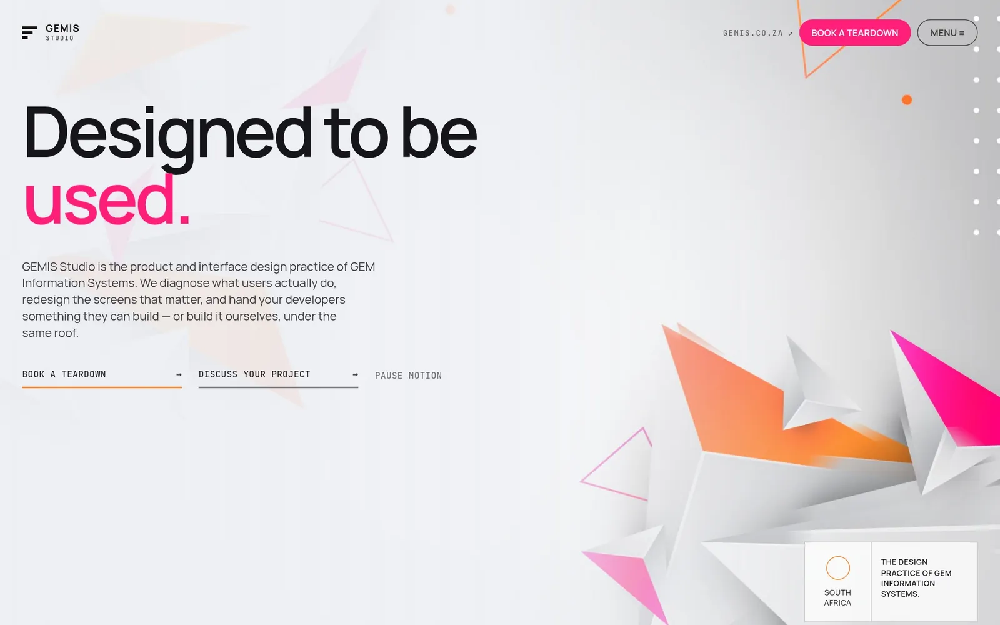
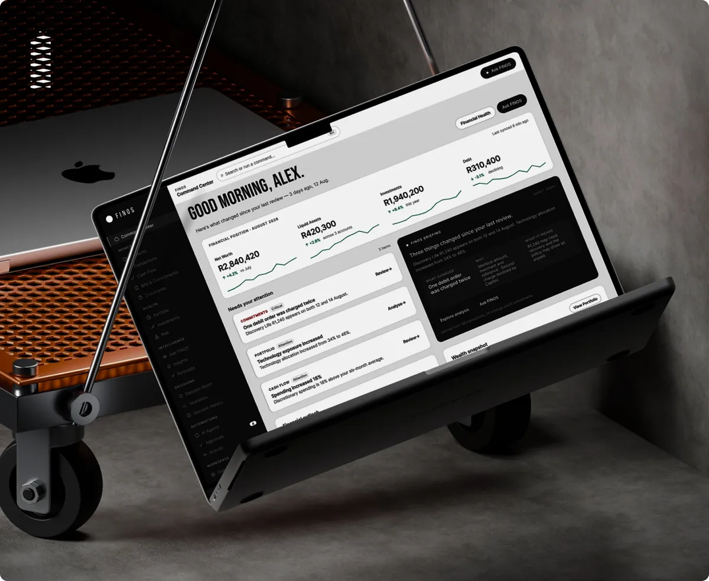

ManaGEM ERP
Designing an ERP experience around the complexity of business operations.
Product design work focused on shaping an ERP experience, making UX/UI decisions and structuring practical digital workflows.
Explore case studyProduct Designer · UI/UX · South Africa
I work across enterprise systems, mobile applications and digital experiences, translating complex requirements into clear, practical and intuitive products.
01 — Snapshot
I approach design as more than the interface. I focus on understanding the underlying problem, structuring the experience and making thoughtful decisions that help digital products work better for the people using them.
02Selected work
An enterprise ERP, a mobile app for field operations and a corporate website — each with a case study showing what I owned and why I made the decisions I did.
ManaGEM ERP
Product design work focused on shaping an ERP experience, making UX/UI decisions and structuring practical digital workflows.
Explore case studyWasteMart Mobile App
A mobile application design project focused on translating product requirements into a structured, usable mobile experience.
Explore case studyGEMIS Corporate Website
A corporate website redesign led through UX/UI design and collaboration with a development team.
Explore case study
Website for the product and interface design practice of GEM Information Systems — a published services ladder, with each case study tied to a named service. Design and front-end build.

A self-initiated concept for a financial operating system: cash flow, forecasts, risk and decisions brought into one workspace. Personal exploration, not client work.
The public landing page for ManaGEM. It supports the ERP case study rather than standing on its own.
03Approach
Good product design requires more than attractive interfaces. It requires understanding the problem, making informed decisions and creating experiences that work in practice.
01
Understand the product, business context, users and requirements.
In practiceOn WasteMart, I started from four questions a driver must be able to answer at any moment — what now, what’s done, what’s left, what if it goes wrong. See it: Understand example →
02
Organise information, define navigation and map meaningful user journeys.
In practiceManaGEM’s navigation is grouped the way the business runs — customers, sales, operations, admin — not the way its data is stored. See it: Structure example →
03
Translate requirements into intuitive interfaces and interaction patterns.
In practiceWasteMart’s primary button changes with the job’s state, so the next action is always the obvious one. See it: Design example →
04
Review the experience, resolve inconsistencies and improve usability.
In practiceManaGEM’s statuses were brought into one plain-language set, so the same colour means the same thing in every module. See it: Refine example →
05
Work towards implementation through clear communication and collaboration.
In practiceThe GEMIS website redesign was built by a development team working from my designs. See it: Collaborate example →
This is how I like to work. Not every project had room for every stage; each case study says what actually happened.
04Capabilities
A
B
C
D
05Experience
2025 — Present
Current role
UI/UX Designer
Case studies ManaGEM ERPGEMIS Corporate Website
2023 — 2025
UI/UX Designer & WordPress Designer

06 — About
I’m a product designer in Johannesburg. I started out designing websites and landing pages for clients at a design studio, and now design enterprise software, mobile apps and websites at Gem Information Systems.
The work I enjoy most is the messy middle: taking a product with lots of moving parts and finding the structure that makes it feel simple. I like working close to developers, because a design only counts once it works in someone’s hands.
More about meContact
I’m open to opportunities to contribute to meaningful digital products and collaborate with teams building better experiences.